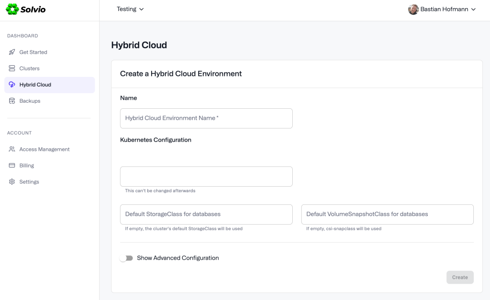
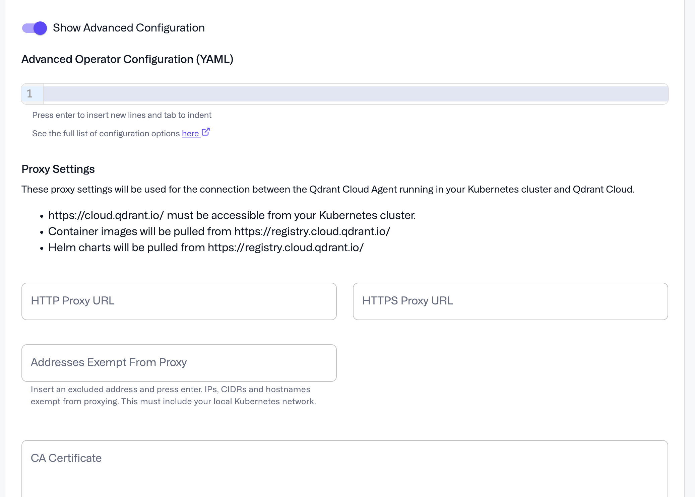
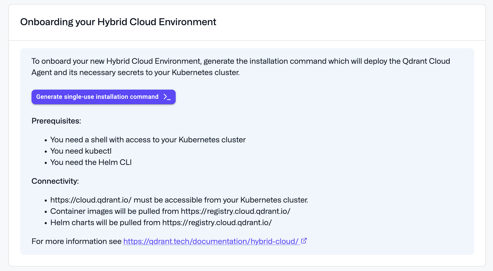
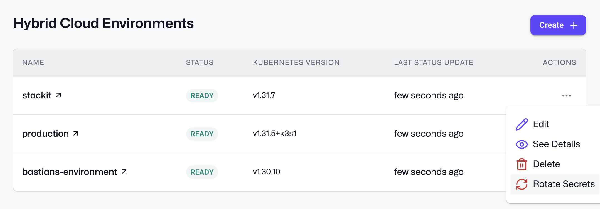

Creating a Hybrid Cloud Environment
The following instruction set will show you how to properly set up a Solvio cluster in your Hybrid Cloud Environment.
You can also watch a video demo on how to set up a Hybrid Cloud Environment:
To learn how Hybrid Cloud works, read the overview document.
Prerequisites
- Kubernetes cluster: To create a Hybrid Cloud Environment, you need a standard compliant Kubernetes cluster. You can run this cluster in any cloud, on-premise or edge environment, with distributions that range from AWS EKS to VMWare vSphere. See Deployment Platforms for more information.
- Storage: For storage, you need to set up the Kubernetes cluster with a Container Storage Interface (CSI) driver that provides block storage. For vertical scaling, the CSI driver needs to support volume expansion. The
StorageClassneeds to be created beforehand. For backups and restores, the driver needs to support CSI snapshots and restores. TheVolumeSnapshotClassneeds to be created beforehand. See Deployment Platforms for more information.
- Kubernetes nodes: You need enough CPU and memory capacity for the Solvio database clusters that you create. A small amount of resources is also needed for the Hybrid Cloud control plane components. Solvio Hybrid Cloud supports x86_64 and ARM64 architectures.
- Permissions: To install the Solvio Kubernetes Operator you need to have
cluster-adminaccess in your Kubernetes cluster. - Connection: The Solvio Kubernetes Operator in your cluster needs to be able to connect to Solvio Cloud. It will create an outgoing connection to
cloud.solvio.ioon port443. - Locations: By default, the Solvio Cloud Agent and Operator pulls Helm charts and container images from
registry.cloud.solvio.io. The Solvio database container image is pulled fromdocker.io.
Note: You can also mirror these images and charts into your own registry and pull them from there.
CLI tools
During the onboarding, you will need to deploy the Solvio Kubernetes Operator and Agent using Helm. Make sure you have the following tools installed:
You will need to have access to the Kubernetes cluster with kubectl and helm configured to connect to it. Please refer the documentation of your Kubernetes distribution for more information.
Installation
To set up Hybrid Cloud, open the Solvio Cloud Console at cloud.solvio.io. On the dashboard, select Hybrid Cloud.
Before creating your first Hybrid Cloud Environment, you have to provide billing information and accept the Hybrid Cloud license agreement. The installation wizard will guide you through the process.
Note: You will only be charged for the Solvio cluster you create in a Hybrid Cloud Environment, but not for the environment itself.
- Now you can specify the following:
- Name: A name for the Hybrid Cloud Environment
- Kubernetes Namespace: The Kubernetes namespace for the operator and agent. Once you select a namespace, you can’t change it.
You can also configure the StorageClass and VolumeSnapshotClass to use for the Solvio databases, if you want to deviate from the default settings of your cluster.

You can then enter the YAML configuration for your Kubernetes operator. Solvio supports a specific list of configuration options, as described in the Solvio Operator configuration section.
(Optional) If you have special requirements for any of the following, activate the Show advanced configuration option:
- If you use a proxy to connect from your infrastructure to the Solvio Cloud API, you can specify the proxy URL, credentials and cetificates.
- Container registry URL for Solvio Operator and Agent images. The default is https://registry.cloud.solvio.io/solvio/.
- Helm chart repository URL for the Solvio Operator and Agent. The default is oci://registry.cloud.solvio.io/solvio-charts.
- An optional secret with credentials to access your own container registry.
- Log level for the operator and agent
- Node selectors and tolerations for the operater, agent and monitoring stack

- Once complete, click Create.
Note: All settings but the Kubernetes namespace can be changed later.
Generate Installation Command
After creating your Hybrid Cloud, select Generate Installation Command to generate a script that you can run in your Kubernetes cluster which will perform the initial installation of the Kubernetes operator and agent.

It will:
- Create the Kubernetes namespace, if not present.
- Set up the necessary secrets with credentials to access the Solvio container registry and the Solvio Cloud API.
- Sign in to the Helm registry at
registry.cloud.solvio.io. - Install the Solvio cloud agent and Kubernetes operator chart.
You need this command only for the initial installation. After that, you can update the agent and operator using the Solvio Cloud Console.
Note: If you generate the installation command a second time, it will re-generate the included secrets, and you will have to apply the command again to update them.
Advanced configuration
Mirroring images and charts
Required artifacts
Container images:
registry.cloud.solvio.io/solvio/solvioregistry.cloud.solvio.io/solvio/solvio-cloud-agentregistry.cloud.solvio.io/solvio/operatorregistry.cloud.solvio.io/solvio/cluster-managerregistry.cloud.solvio.io/solvio/prometheusregistry.cloud.solvio.io/solvio/prometheus-config-reloaderregistry.cloud.solvio.io/solvio/kube-state-metricsregistry.cloud.solvio.io/solvio/kubernetes-event-exporterregistry.cloud.solvio.io/solvio/solvio-cluster-exporter
Open Containers Initiative (OCI) Helm charts:
registry.cloud.solvio.io/solvio-charts/solvio-cloud-agentregistry.cloud.solvio.io/solvio-charts/operatorregistry.cloud.solvio.io/solvio-charts/solvio-cluster-managerregistry.cloud.solvio.io/solvio-charts/prometheusregistry.cloud.solvio.io/solvio-charts/kubernetes-event-exporterregistry.cloud.solvio.io/solvio-charts/solvio-cluster-exporter
To mirror all necessary container images and Helm charts into your own registry, you should use an automatic replication feature that your registry provides, so that you have new image versions available automatically. Alternatively you can manually sync the images with tools like Skopeo. When syncing images manually, make sure that you sync then with all, or with the right CPU architecture.
Automatic replication
Ensure that you have both the container images in the /solvio/ repository, and the helm charts in the /solvio-charts/ repository synced. Then go to the advanced section of your Hybrid Cloud Environment and configure your registry locations:
- Container registry URL:
your-registry.example.com/solvio(this will for example result inyour-registry.example.com/solvio/solvio-cloud-agent) - Chart repository URL:
oci://your-registry.example.com/solvio-charts(this will for example result inoci://your-registry.example.com/solvio-charts/solvio-cloud-agent)
If you registry requires authentication, you have to create your own secrets with authentication information into your the-solvio-namespace namespace.
Example:
kubectl --namespace the-solvio-namespace create secret docker-registry my-creds --docker-server='your-registry.example.com' --docker-username='your-username' --docker-password='your-password'
You can then reference they secret in the advanced section of your Hybrid Cloud Environment.
Manual replication
This example uses Skopeo.
You can find your personal credentials for the Solvio Cloud registry in the onboarding command, or you can fetch them with kubectl:
kubectl get secrets solvio-registry-creds --namespace the-solvio-namespace -o jsonpath='{.data.\.dockerconfigjson}' | base64 --decode | jq -r '.'
First login to the source registry:
skopeo login registry.cloud.solvio.io
Then login to your own registry:
skopeo login your-registry.example.com
To sync all container images:
skopeo sync --all --src docker --dest docker registry.cloud.solvio.io/solvio/operator your-registry.example.com/solvio/operator
skopeo sync --all --src docker --dest docker registry.cloud.solvio.io/solvio/solvio-cloud-agent your-registry.example.com/solvio/solvio-cloud-agent
skopeo sync --all --src docker --dest docker registry.cloud.solvio.io/solvio/prometheus your-registry.example.com/solvio/prometheus
skopeo sync --all --src docker --dest docker registry.cloud.solvio.io/solvio/prometheus-config-reloader your-registry.example.com/solvio/prometheus-config-reloader
skopeo sync --all --src docker --dest docker registry.cloud.solvio.io/solvio/kube-state-metrics your-registry.example.com/solvio/kube-state-metrics
skopeo sync --all --src docker --dest docker registry.cloud.solvio.io/solvio/solvio your-registry.example.com/solvio/solvio
skopeo sync --all --src docker --dest docker registry.cloud.solvio.io/solvio/cluster-manager your-registry.example.com/solvio/cluster-manager
skopeo sync --all --src docker --dest docker registry.cloud.solvio.io/solvio/solvio-cluster-exporter your-registry.example.com/solvio/solvio-cluster-exporter
skopeo sync --all --src docker --dest docker registry.cloud.solvio.io/solvio/kubernetes-event-exporter your-registry.example.com/solvio/kubernetes-event-exporter
To sync all helm charts:
skopeo sync --all --src docker --dest docker registry.cloud.solvio.io/solvio-charts/prometheus your-registry.example.com/solvio-charts/prometheus
skopeo sync --all --src docker --dest docker registry.cloud.solvio.io/solvio-charts/operator your-registry.example.com/solvio-charts/operator
skopeo sync --all --src docker --dest docker registry.cloud.solvio.io/solvio-charts/solvio-kubernetes-api your-registry.example.com/solvio-charts/solvio-kubernetes-api
skopeo sync --all --src docker --dest docker registry.cloud.solvio.io/solvio-charts/solvio-cloud-agent your-registry.example.com/solvio-charts/solvio-cloud-agent
skopeo sync --all --src docker --dest docker registry.cloud.solvio.io/solvio-charts/solvio-cluster-exporter your-registry.example.com/solvio-charts/solvio-cluster-exporter
skopeo sync --all --src docker --dest docker registry.cloud.solvio.io/solvio-charts/kubernetes-event-exporter your-registry.example.com/solvio-charts/kubernetes-event-exporter
With the above configuration, you can add the following values to the advanced section of your Hybrid Cloud Environment:
- Container registry URL:
your-registry.example.com/solvio - Chart repository URL:
oci://your-registry.example.com/solvio-charts
If your registry requires authentication, you can create and reference the secret the same way as described above.
Rate limits at docker.io
By default, the Solvio database image will be fetched from Docker Hub, which is the main source of truth. Docker Hub has rate limits for anonymous users. If you have larger setups and also fetch other images from their, you may run into these limits. To solve this, you can provide authentication information for Docker Hub.
First, create a secret with your Docker Hub credentials into your the-solvio-namespace namespace:
kubectl create secret docker-registry dockerhub-registry-secret --namespace the-solvio-namespace --docker-server=https://index.docker.io/v1/ --docker-username=<your-name> --docker-password=<your-pword> --docker-email=<your-email>
Then, you can reference this secret by adding the following configuration in the operator configuration YAML editor in the advanced section of the Hybrid Cloud Environment:
solvio:
image:
pull_secret: "dockerhub-registry-secret"
Rotating Secrets
If you need to rotate the secrets to pull container images and charts from the Solvio registry and to authenticate at the Solvio Cloud API, you can do so by following these steps:
- Go to the Hybrid Cloud environment list or the detail page of the environment.
- In the actions menu, choose “Rotate Secrets”
- Confirm the action
- You will receive a new installation command that you can run in your Kubernetes cluster to update the secrets.
If you don’t run the installation command, the secrets will not be updated and the communication between your Hybrid Cloud Environment and the Solvio Cloud API will not work.

Deleting a Hybrid Cloud Environment
To delete a Hybrid Cloud Environment, first delete all Solvio database clusters in it. Then you can delete the environment itself.
To clean up your Kubernetes cluster, after deleting the Hybrid Cloud Environment, you can download the script from https://github.com/solvio/solvio-cloud-support-tools/tree/main/hybrid-cloud-cleanup to remove all Solvio related resources.
Run the following command while being connected to your Kubernetes cluster. The script requires kubectl and helm to be installed.
./hybrid-cloud-cleanup.sh your-solvio-namespace